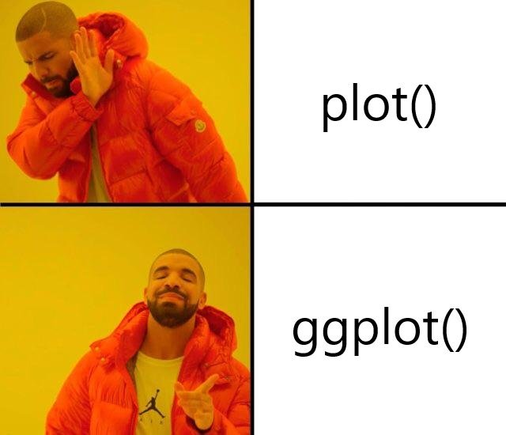

Chapter 1 为什么要使用ggplot2
1.1 R画图系统
R有不同的画图系统，比如支持3D的rgl包是基于OpenGL的，而支持交互的iplots包是基于JavaGD的，更不要提现在对Javascript封装的各种可视化的包，一般我们讲R的画图系统，都特定R本身的画图系统，不包括上面提到的各种封装的包。R的画图系统有两个，base graphics system和grid graphics system，它们对于画图提供底层的支持。R语言可视化的包非常多，能够称之为图形系统的，我认为就只有base和grid，虽然在网上经常看到ggplot2 graphics system这样的说法，但ggplot2是不提供画图底层支持的，它本身是基于grid开发的，我觉得是有必要区分开来，图形系统是base和grid，而lattice和ggplot2这种通用目的的可视化包，称之为可视化系统（visualization system），另外各种各样针对特定做图目的的衍生包称之为图形应用（graphic applications）。
base画图系统是基于S3面向对象来设计的，R的基础数据结构基本上都有plot()方法，直接plot(object)便可对object进行做图，非常方便，要对图像进行注释，比如加拟合的曲线，加文本等，相对于ggplot2等其它软件来说，是以一种非常符合直觉的方式来进行的，这是base系统的好处，另一方面base的代码即使是10年前的，现在也能重复出图，但ggplot2就不行了，版本的迭代，有可能使你现在的代码变得不可用，但这种情况发生在base系统的可能性就极低。base画图相当于在一块静态的画布上不断添加素，可以说只给你纸笔但没有橡皮擦，另一方面如果你要设计复杂的图形布局，包括缩放、嵌套图形等，用base就非常困难！
而grid的设计就是为了解决这一问题，一方面graphic object可修改，相当于给了你橡皮擦，另一方面viewports系统，复杂的图形布局轻而易举就可实现，不过你要时刻清楚自己操作的是堆栈中的那一个viewport。grid的学习难度比较大，但它是目前R语言中最灵活、最强大的画图系统。
lattice包S-plus中trellis图形系统的R语言实现，基于grid，可以非常方便地应对多重变量的数据可视化，另外vcd包也是基于grid系统，它针对的是分类变量的数据可视化，实现了诸如mosaic plot, spine plot, sieve diagram等。这些包虽然没有ggplot2受欢迎，但它们的设计简单，方便我们使用grid包对可视化结果修改细节。而ggplot2如果主题系统不支持的话，用grid来修改就变得很复杂。
ggplot2的优势在于实现了图形语法，让我们以更高的抽象水平来表达图形，画图无非是一个映射过程，而复杂的图通过不同几何对象的图层叠加得以实现，它本身是一门语言，我们通过学习简单的语法就可以拥有强大的表达能力，这是推荐大家学习的理由之一！另外现在ggplot2的用户非常多，扩展包也非常多，对于很多特殊领域的应用，有很多扩展包实现，比如说在进化树可视化上我们有ggtree包，这也是推荐大家学习的理由，社区的力量非常重要，你面临的问题可能已经有人解决，或者你遇到的困难，有很多人有能力帮你，也乐于帮你，对于学习来说，太重要了。
当然缺点也是有的，正如前面说的，要grid改起来比较麻烦，当然其实会grid的人也不多，别一方面是版本上的不兼容，这在前面也提及到，好在现在的版本已经趋于稳定，应该不会有太大的变动。
1.2 base plot vs ggplot2
